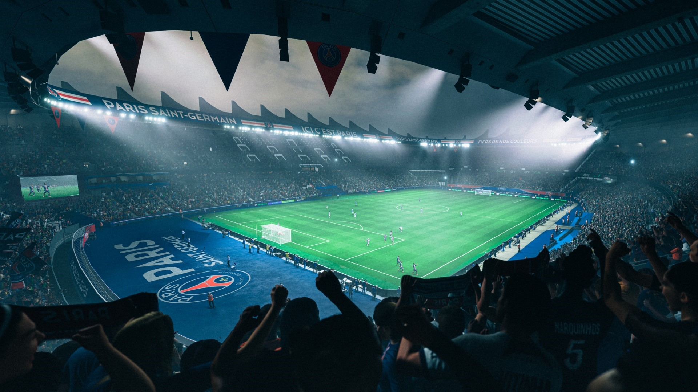
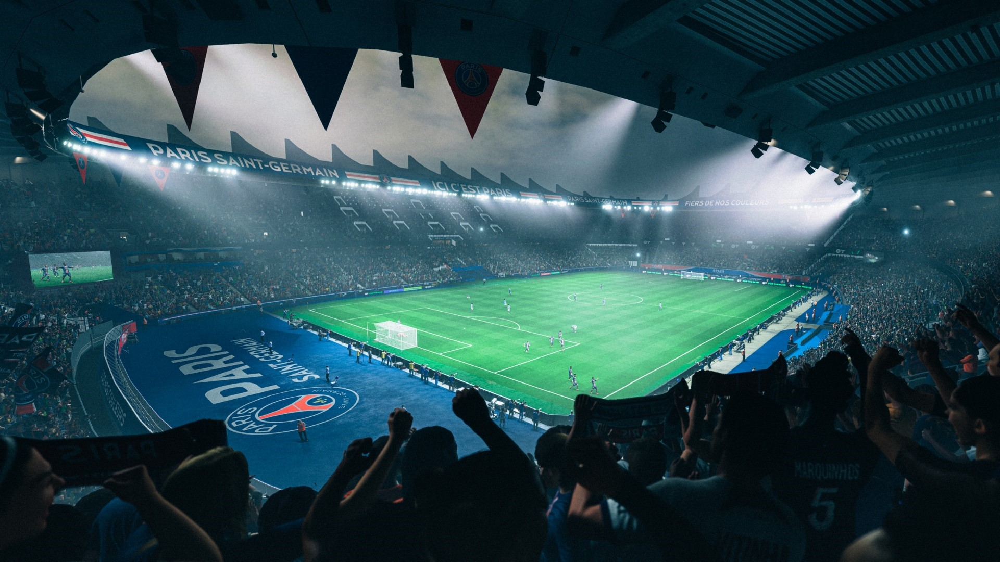

A continuación insertamos una barra de búsqueda, para ello utilizaremos la red, copiaremos el código necesario desde un sitio de internet
Los videojuegos de fútbol desarrollados por Electronic Arts son líderes en el rubro hace ya más de 10 años. En ese lapso de tiempo, no solo logró ganarle a su competencia a fuerza de licencias y grandes rendimientos sino también de grandes modos de juego como Ultimate Team. Sin embargo, mantenerse tantos años también puede terminar siendo repetitivo y es por eso que, año tras año, los jugadores esperamos ver qué nos pueden ofrecer de nuevo esta vez.
Desde Malditos Nerds tuvimos la suerte de formar parte de la presentación virtual de EA Sports FC 25, el próximo título de la franquicia, donde varios desarrolladores de diversas facetas de este videojuego nos explicaron cuáles fueron sus objetivos e intenciones, sus aprendizajes en el último año y todo lo que esperan que esta nueva versión del título logre.
EA SPORTS FC 25 | Presentación virtual de EA SPORTS FC 25
EA SPORTS FC 25 | Presentación virtual de EA SPORTS FC 25
Para iniciar, y antes de meternos en la data dura de lo que ahora conocemos de EA Sports FC 25, es importante remarcar que este videojuego se lanzará oficialmente el 27 de septiembre en todas las plataformas. Una semana antes tendrán acceso todos aquellos que hayan adquirido el Early Access.
A su vez, sabemos que la portada oficial del videojuego estará esta vez centrada en Jude Bellingham, la gran figura del Real Madrid. Algo muy interesante es que la Ultimate Edition no estará centrada sólo en él sino que estará acompañado de varias leyendas como Zinedine Zidane o Thierry Henry, en una excelente foto portada que ellos mismos definieron como “la más linda que hicieron hasta la fecha”. Después de esta información protocolar, habitual en cualquier evento de videojuegos, dieron inicio a lo que conocen como la “fase dos” de EA Sports FC 25: los nuevos modos, tecnologías y mecánicas.

 
